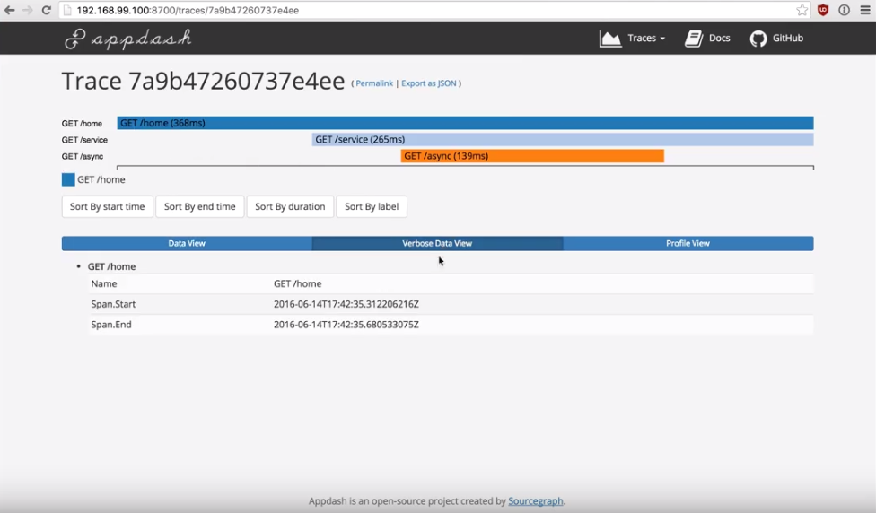

Distributed Tracing in 10 Minutes
originally posted on OpenTracing blog
With the intrinsic concurrency and asynchrony of modern software applications, distributed tracing has become part of the table stakes for effective monitoring. That said, instrumenting a system for tracing has, at least historically, been a labor-intensive, complicated task. Tracing brings the benefits of visibility into an application as it grows to 10+ processes, starts seeing increased concurrency, or non-trivial interactions between mobile/web clients and servers. But setting up instrumentation and deciding which tracer to use can add up to a large project. The OpenTracing standard changes that, making it possible to instrument applications for distributed tracing with minimal effort. As I demonstrate below, you can now easily set up tracing in less than 10 minutes with OpenTracing.
A screencast of the example app built in this post
Imagine a simple website. Whenever a user goes to your home page, the web server makes two HTTP calls, and each of those calls branches out and makes a call to the database. This is fairly straightforward and debugging any slow requests wouldn’t be too difficult. If you are serious about latency, you might assign each request a unique ID and propagate it downstream through HTTP headers. If a request took a long time, you can then grep over the log files for that request ID to figure out what was going on. Now imagine your website starts becoming popular and your application is spread across multiple machines and services. As the number of machines and services grow, logs provide less and less visibility. Determining causality gets tricky pretty quickly. This is when you realize workflow tracing would have more than worth the investment.
As I mentioned, OpenTracing steps in to make it very easy for you to trace because it standardizes instrumentation. What that means is that you can instrument first and defer most implementation decisions to later.
You can follow my entire process below — from building the web app to seeing the traces in AppDash, the open source distributed tracing system I chose. Alternatively, you can skip ahead and see the finished result with Appdash. To do that, run
docker run --rm -ti -p 8080:8080 -p 8700:8700 bg451/opentracing-example
This will spin up the test server and a local Appdash instance. The source code can be found at here.
For those who want to see the full story, you can go through the full exercise of building the web app, instrumenting it with OpenTracing, binding to a tracer, AppDash, and finally seeing the traces, in this blog post.
Building the web app
To start off, write a few simple endpoints:
// Acts as our index page
func indexHandler(w http.ResponseWriter, r *http.Request) {
w.Write([]byte(`<a href="/home"> Click here to start a request </a>`))
}
func homeHandler(w http.ResponseWriter, r *http.Request) {
w.Write([]byte("Request started"))
go func() {
http.Get("http://localhost:8080/async")
}()
http.Get("http://localhost:8080/service")
time.Sleep(time.Duration(rand.Intn(200)) * time.Millisecond)
w.Write([]byte("Request done!"))
}
// Mocks a service endpoint that makes a DB call
func serviceHandler(w http.ResponseWriter, r *http.Request) {
// ...
http.Get("http://localhost:8080/db")
time.Sleep(time.Duration(rand.Intn(200)) * time.Millisecond)
// ...
}
// Mocks a DB call
func dbHandler(w http.ResponseWriter, r *http.Request) {
time.Sleep(time.Duration(rand.Intn(200)) * time.Millisecond)
// here would be the actual call to a DB.
}
Put this all together into a working server.
func main() {
port := 8080
addr := fmt.Sprintf(":%d", port)
mux := http.NewServeMux()
mux.HandleFunc("/", indexHandler)
mux.HandleFunc("/home", homeHandler)
mux.HandleFunc("/async", serviceHandler)
mux.HandleFunc("/service", serviceHandler)
mux.HandleFunc("/db", dbHandler)
fmt.Printf("Go to http://localhost:%d/home to start a request!\n", port)
log.Fatal(http.ListenAndServe(addr, mux))
}
Throw everything into main.go file and run: go run main.go.
Instrument the app
Now that you have a working web server, you can start instrumenting it. Start at the top level and work your way down. You can start a span and finish it like so:
func homeHandler(w http.ResponseWriter, r *http.Request) {
span := opentracing.StartSpan("/home") // Start a span using the global, in this case noop, tracer
defer span.Finish()
// ... the rest of the function
}
This span records how long it takes homeHandler to complete, but that’s just the tip of the iceberg in terms of information that you can record. OpenTracing enables you to attach tags and logs to an individual span. For instance, you can specify whether or not a span contains an error inside homeHandler:
// The ext package provides a set of standardized tags available for use.
import "github.com/opentracing/opentracing-go/ext"
func homeHandler(w http.ResponseWriter, r *http.Request) {
// ...
// We record any errors now.
_, err := http.Get("http://localhost:8080/service")
if err != nil {
ext.Error.Set(span, true) // Tag the span as errored
span.LogEventWithPayload("GET service error", err) // Log the error
}
// ...
}
You can record other things as well, including important events, the user ID, and the browser type.
However, that’s only for one function. To build true end-to-end traces, you’ll want to include spans for the client side of the HTTP calls. In our example, you need to start propagating span contexts downstream to the other endpoints now, and those endpoints need to be able to join traces. This is where the Inject/Extract part of the API comes into play. homeHandler creates a "root" span since it’s the first thing to get called. You will start there and work your way down.
func homeHandler(w http.ResponseWriter, r *http.Request) {
w.Write([]byte("Request started"))
span := opentracing.StartSpan("/home")
defer span.Finish()
// Since we have to inject our span into the HTTP headers, we create a request
asyncReq, _ := http.NewRequest("GET", "http://localhost:8080/async", nil)
// Inject the span context into the header
err := span.Tracer().Inject(span.Context(),
opentracing.TextMap,
opentracing.HTTPHeaderTextMapCarrier(asyncReq.Header))
if err != nil {
log.Fatalf("Could not inject span context into header: %v", err)
}
go func() {
if _, err := http.DefaultClient.Do(asyncReq); err != nil {
span.SetTag("error", true)
span.LogEvent(fmt.Sprintf("GET /async error: %v", err))
}
}()
// Repeat for the /service call.
// ....
}
What happens underneath is that the underlying implementation injects a span’s metadata about the current trace into the request’s headers to be read by anyone downstream. Go ahead and extract that data in serviceHandler.
func serviceHandler(w http.ResponseWriter, r *http.Request) {
var sp opentracing.Span
opName := r.URL.Path
// Attempt to join a trace by getting trace context from the headers.
wireContext, err := opentracing.GlobalTracer().Extract(
opentracing.TextMap,
opentracing.HTTPHeaderTextMapCarrier(r.Header))
if err != nil {
// If for whatever reason we can't join, go ahead an start a new root span.
sp = opentracing.StartSpan(opName)
} else {
sp = opentracing.StartSpan(opName, opentracing.ChildOf(wireContext))
}
defer sp.Finish()
// ... rest of the function
And that’s it! If you repeat the steps above for things you want to trace, you should have a fully instrumented system fairly quickly. To decide what needs be traced, you should look at your requests’ critical paths.
Connect the tracer
One of the great things about OpenTracing is that once your system is instrumented, adding a tracer is really straightforward! In this example, you can see that I’ve used Appdash, an open source tracing system. There’s small chunk of code needed inside your main function to start the Appdash instance. However, you won’t need to touch any of your instrumentation code at all. In your main function, add:
import (
"sourcegraph.com/sourcegraph/appdash"
“sourcegraph.com/sourcegraph/appdash/traceapp”
appdashot "sourcegraph.com/sourcegraph/appdash/opentracing"
)
func main() {
// ...
store := appdash.NewMemoryStore()
// Listen on any available TCP port locally.
l, err := net.ListenTCP("tcp", &net.TCPAddr{IP: net.IPv4(127, 0, 0, 1), Port: 0})
if err != nil {
log.Fatal(err)
}
collectorPort := l.Addr().(*net.TCPAddr).Port
collectorAdd := fmt.Sprintf(":%d", collectorPort)
// Start an Appdash collection server that will listen for spans and
// annotations and add them to the local collector (stored in-memory).
cs := appdash.NewServer(l, appdash.NewLocalCollector(store))
go cs.Start()
// Print the URL at which the web UI will be running.
appdashPort := 8700
appdashURLStr := fmt.Sprintf("http://localhost:%d", appdashPort)
appdashURL, err := url.Parse(appdashURLStr)
if err != nil {
log.Fatalf("Error parsing %s: %s", appdashURLStr, err)
}
fmt.Printf("To see your traces, go to %s/traces\n", appdashURL)
// Start the web UI in a separate goroutine.
tapp, err := traceapp.New(nil, appdashURL)
if err != nil {
log.Fatal(err)
}
tapp.Store = store
tapp.Queryer = store
go func() {
log.Fatal(http.ListenAndServe(fmt.Sprintf(":%d", appdashPort), tapp))
}()
tracer := appdashot.NewTracer(appdash.NewRemoteCollector(collectorPort))
opentracing.InitGlobalTracer(tracer)
// ...
}
This will create an embedded Appdash instance and serve traces locally.

Should you want to change your tracer implementation, it is a O(1) change because of OpenTracing. All you need to do is update your main function; the rest of your instrumentation stays the same. For example, if you decide to use Zipkin later on, this is all you would need to do in your main function:
import zipkin "github.com/openzipkin/zipkin-go-opentracing"
func main() {
// ...
// Replace Appdash tracer code with this
collector, err := zipkin.NewKafkaCollector("ZIPKIN_ADDR")
if err != nil {
log.Fatal(err)
return
}
tracer, err = zipkin.NewTracer(
zipkin.NewRecorder(collector, false, "localhost:8000", "example"),
)
if err != nil {
log.Fatal(err)
}
opentracing.InitGlobalTracer(tracer)
// ...
}
Having made it thus far, you can see that instrumenting your code for tracing is much easier with OpenTracing. I recommend this as a best practice whenever starting out on an app. That’s because by setting up tracing even when your application is small, trace data can guide your development strategy as you grow. Having visibility into your processes as they start to mature and increase in complexity will help you build a sustainable product.